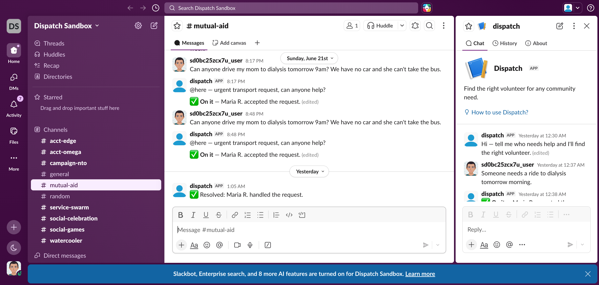
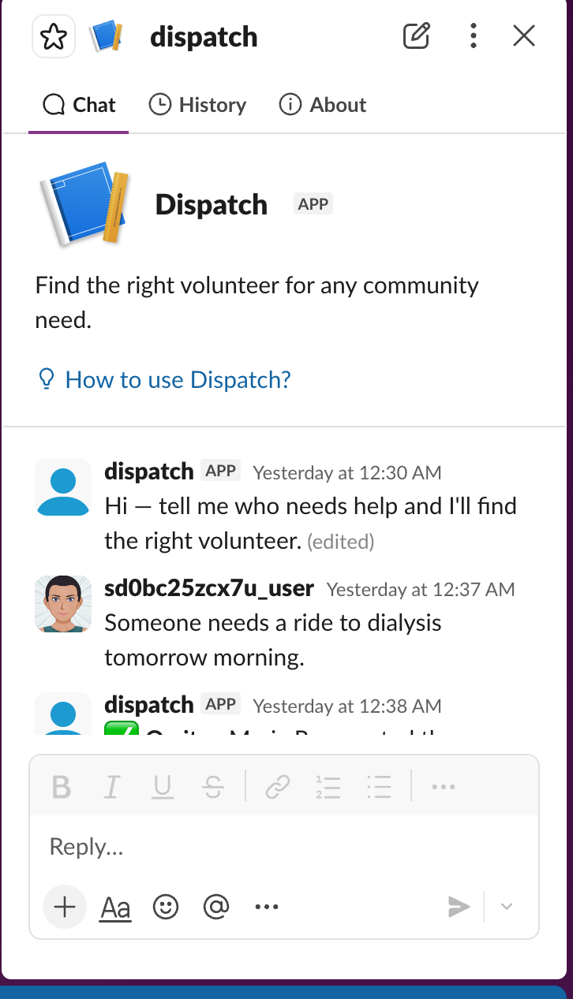
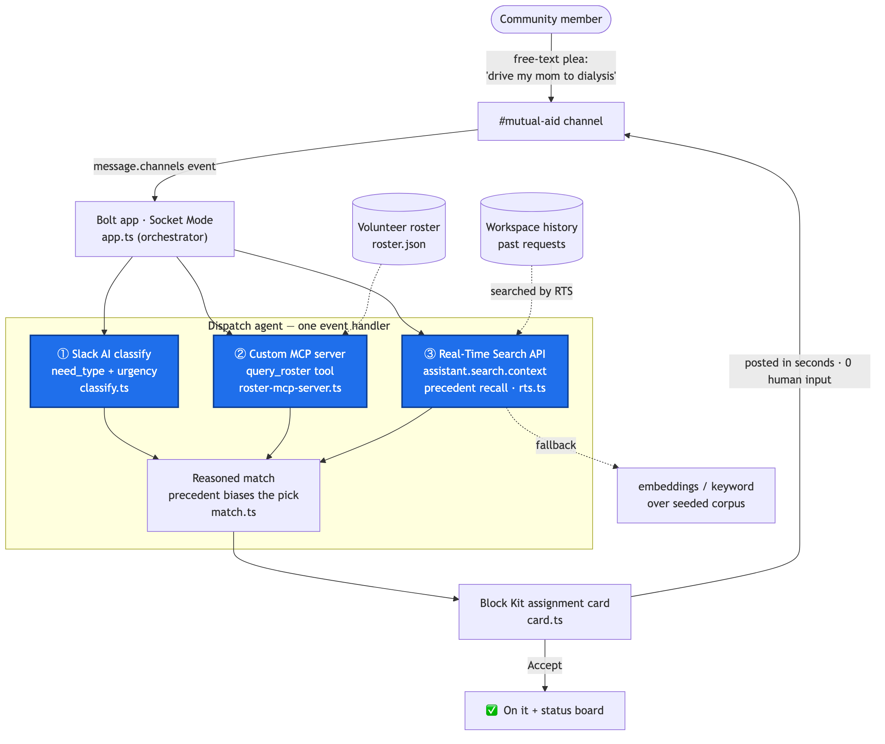

Mutual aid runs on chaos and goodwill.
What if it had memory?
# mutual-aid
Can anyone drive my mom to dialysis tomorrow 9am? We have no car and she can't take the bus.
A plea lands in a busy channel — easy to miss.
Reading the request…
Need: transport · urgency high — finding volunteers…
Searching workspace history for who's helped before…
Ask it in plain English — and watch it think.
🟠 TRANSPORT · urgency high
Assigned ▸ Maria R.
available tomorrow AM · 1.2 mi away · already handled this exact transport request before
🧠 Recalled from this workspace
✅ Resolved: Maria R. drove the Chen family to their dialysis appointment last month — she offered to be their regular ride going forward.
Posted in # mutual-aid
The precedent is recalled — not guessed.
LIVE · DISPATCH SANDBOX

Live in a real Slack workspace — the channel, the agent, the ledger.
LIVE · DISPATCH AGENT

Assigned, explained — and logged for next time.

Slack AI · MCP · Real-Time Search
Three required technologies. One agent.
Dispatch.
Today's help becomes tomorrow's memory.
github.com/davidstrouk/dispatch-slack-agent